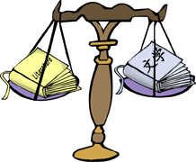

Suicide and the Censor


Can comparison be a juxtaposition, a counterpoint, a seeming similarity in the face of vast irreconcilable difference?
Click the images to the left to read about the role of humor in fighting censorship. Both images give reflections from different cultures and histories. But within these differences the comparatist will see echoes, reverberations which are more than coincidental.
Suicide and the Censor
To Compare
To compare is to gain something otherwise impossible. To compare is to speak to more than one body of criticism. To discover the unexpected and make sense of the world.
